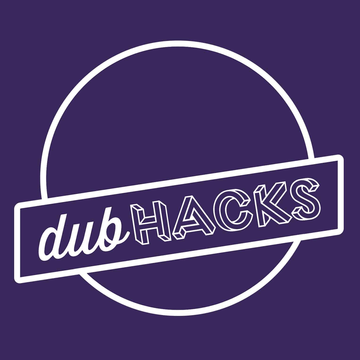

Work

I'll be interning at Google with the Google Cloud Platform (Developer Relations) team.

DubHacks
2014 - SeattleFounded the first student-led, and the biggest ever hackathon in the PNW. Led a team of 10 students, hosting 350+ students from all across the US and 30+ sponsor companies. GeekWire coverage.
I interned at Google with the Street View (Maps) team where I worked on making the data ingest pipeline more reliable and faster (for data center uploads).

Lenskart.com
Summer '13 - New DelhiIn Summer 2013, I interned at Lenskart.com as a Data Analyst and shipped two custom dashboards with realtime data streams using Tableau.

UW iSchool
Aug '12 - Aug '13 - SeattleAssisted Jeff Huang as a Research Assistant. Collected data, ran statistical tests, visualized the findings and published a blog post about the results.